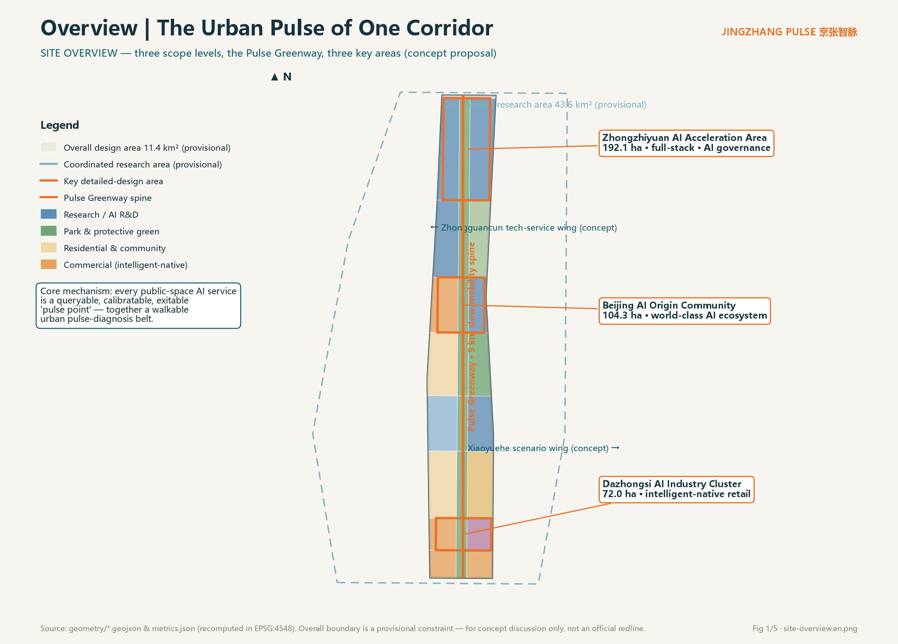
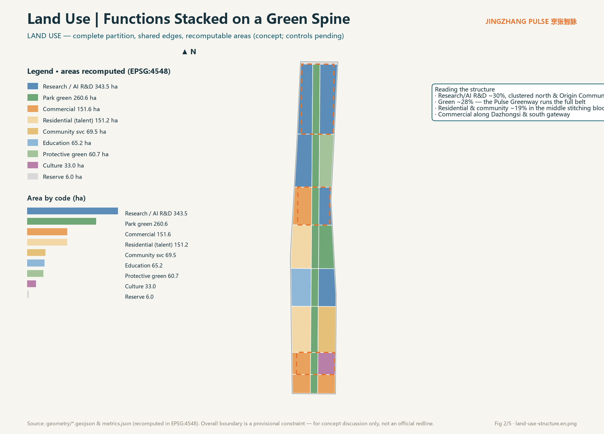
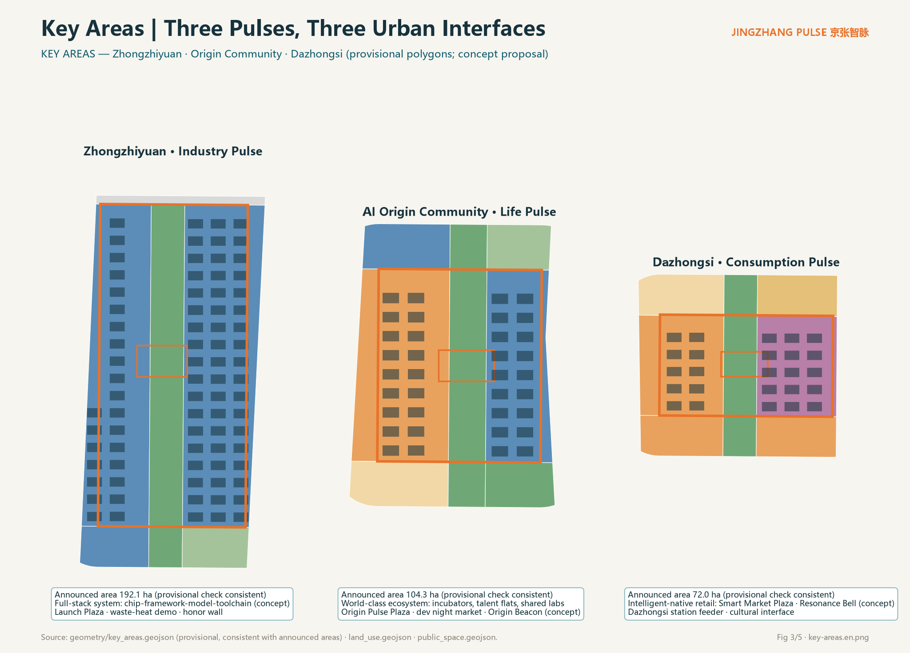
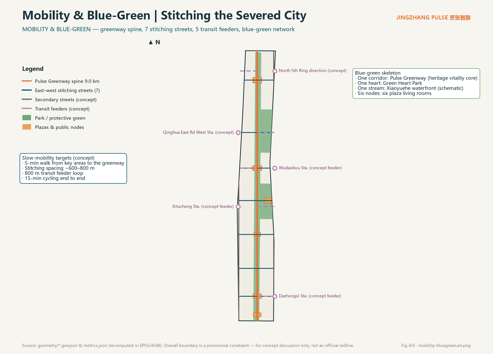
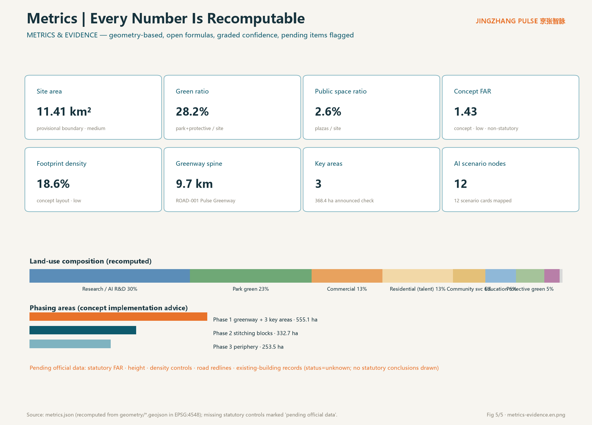

JINGZHANG PULSE: The Urban Pulse of One Corridor, Three Districts and Two Wings — A Concept Proposal for the Centennial Jing-Zhang AI Innovation Belt
A concept proposal built around the idea of an urban pulse: a 9 km heritage greenway links three key areas, turning every public-space AI service into a queryable, calibratable, and exitable 'pulse point'. All spatial content is based on provisional constraint geometry and is conceptual advice only — it does not replace statutory planning.
JINGZHANG PULSE: The Urban Pulse of One Corridor, Three Districts and Two Wings
Design Basis and Source Inventory
This proposal is governed by the official pre-qualification announcement, which defines the three scope levels, three key areas, and official area figures Source Standard, and by the agent open-call taskbook with its ten co-creation principles, six required tasks, and boundary clause Source. Land-use coding follows the project subset of the national land-use classification guide Standard; the boundary between urban-design expression and regulatory-plan judgment follows MOHURD measures Standard Standard.
Source usability follows the public source registry: the announcement and taskbook are formal-ready; the provisional boundary polygons are intake-only leads Source. Exhaustive machine indexes live in sources.json, metrics.json, standard_matrix.json, design_depth_matrix.json, and compliance_matrix.json.
Data gaps, stated plainly: the official precise boundary, regulatory controls (FAR, height, density, green ratio, setbacks), road redlines, existing-building records, and exact heritage extents are not in the public site package. All affected indicators are marked "pending official data", and all spatial placements are conceptual suggestions Source.

Three-Level Scope Framework
The coordinated research area (~43.6 km²) carries industry and future-city strategy; the overall design area (~11.4 km²) is the main spatial design carrier; the key detailed-design area (~368.4 ha) comprises, north to south, the Zhongzhiyuan AI Acceleration Area (192.1 ha), the Beijing AI Origin Community (104.3 ha), and the Dazhongsi AI Industry Cluster (72.0 ha) Source Spatial data.
The submitted overall design boundary is a provisional constraint polygon published by the repository maintainers; recalculated in EPSG:4548 it covers about 11.413 million sqm, consistent with the announced 11.4 km² Metric. Its limits must be explicit: it is not an official redline, not a basis for precise area determination, and not an approval basis. Once official polygons arrive, the land-use partition, green/public-space indicators, and phasing areas must be recalculated through the same scripted path Depth.
The three levels answer three questions in sequence: why here (strategy), how space is organized (one corridor, three districts, two wings), and what the interfaces feel like (experienceable public scenes in the key areas) Depth.

Coordinated Research Area: Industry and Future-City Study
Overall concept: the urban pulse. In 1909 the Beijing–Zhangjiakou railway organized China's first self-built railway around timetable discipline. Today, as AI services enter public space at scale, the city needs a new public discipline: every AI service behaves like a pulse — continuous, public, and palpable. Each public-space AI service is a "pulse point" that publishes its service status, data usage, human-staffing location, and exit mechanism; along the 9 km heritage greenway these points form a walkable "urban pulse-diagnosis belt" Source Standard.
Naming system. Primary name 京张智脉 / JINGZHANG PULSE. Spatial sequence: Pulse Greenway (main spine), Pulse Plazas (six public living rooms), Pulse Kiosks (AI service inquiry points), Stitching Streets (east–west slow-mobility streets); operation brands include Pulse Open Day and Public Scenario Test Week. All sub-names are original concept words coined for this proposal.
Visual identity and logo direction. The logo motif combines "sleeper rhythm × pulse waveform": a horizontal baseline interrupted by evenly spaced railway sleepers, rising into a pulse beat at the third stroke — the overlay of century-old railway discipline and the AI-era urban rhythm. The primary color "Jingzhang Teal" draws on the blue-grey of steel and industrial heritage; "Pulse Orange" marks every AI scenario node. This is a directional concept only: final fonts, imagery, and trademarks require separate clearance Source.
Three positionings and five functions, spatialized. The Centennial Jing-Zhang culture belt lands on the heritage corridor and six plaza interfaces; the urban AI life-experience belt lands on the greenway and seven stitching streets; the AI fusion-innovation belt lands on the three key areas. Among the five functions, the full-stack indigenous innovation system anchors Zhongzhiyuan; the world-class innovation ecosystem anchors the Origin Community; the AI+ scenario paradigm runs along the Xiaoyuehe wing and the belt-wide scenario network; the intelligent vibrant city shows in slow mobility and living-room systems; and global AI-governance voice is expressed through the auditable public interface of the "pulse protocol" Source.
Three districts and two wings synergy loop. Zhongzhiyuan exports full-stack capability → the Origin Community offers a real-life testbed → Dazhongsi completes consumer-side validation → the Zhongguancun technology-service wing provides capital and IP services → the Xiaoyuehe scenario wing feeds back demand; the physical carrier of the loop is the greenway plus stitching streets Spatial data.
Global case lessons (concept transfer, not factual citation). Kendall Square shows the "half-mile beyond the campus wall" stitched by walkable networks; King's Cross Knowledge Quarter shows heritage fabric carrying knowledge industries; Punggol Digital District shows campus-city hybrid governance; Shenzhen's Yuehai Subdistrict warns that high-density industry districts need strong public services; Hangzhou's Future Sci-Tech City shows platform-enterprise co-building of public space; Zurich's ETH district shows that small-scale, face-to-face networks remain a hard-tech necessity. These convert into three spatial principles: walkable innovation encounter, public-ized heritage interfaces, and institutionalized scenario testing Source.
Future-city judgment. AI as new-quality productive force needs not bigger parks but shorter distances — from lab to real scenario, from failure to review, from technology to public trust. The Pulse Greenway compresses all three to walking scale Depth.
Overall Design Area: Urban Renewal at Regulatory-Plan Urban-Design Depth
Spatial structure: one corridor, three districts, two wings, many pulse points. The corridor is the Pulse Greenway, about 9.7 km along the heritage alignment Metric; the districts are the three key areas; the wings are the Zhongguancun technology-service wing (west) and Xiaoyuehe scenario-empowerment wing (east), expressed at the stitching-street ends; pulse points are six plazas and twelve AI scenario nodes Spatial data.
Land use (conceptual). The partition fully covers the provisional boundary with shared edges — no gaps, no overlaps — and every parcel can be recomputed in EPSG:4548 Spatial data Depth. Research/AI-R&D land is about 343.5 ha (~30%), concentrated in Zhongzhiyuan and the Origin Community's east side; park and protective green about 321.3 ha (~28%); residential and community services about 220.7 ha (~19%) in the middle stitching blocks; commercial services about 151.6 ha (~13%) anchored at Dazhongsi and the south gateway; education, culture, and reserve land provide flexibility Metric.
Renewal framework. Three renewal object classes: public-oriented renewal of the heritage corridor and adjacent underused space (conceptual direction, not demolition conclusions); service mending in middle community blocks; and functional-substitution studies in key-area industrial blocks. Statutory retain/renovate/demolish/new-build judgments require the official regulatory plan and existing-building records; all parcel-level conclusions are pending official data and professional review Standard Depth.
Building scale and intensity. Conceptual building footprint is about 2.12 million sqm, footprint density ~18.6%, and conceptual FAR ~1.43 — all low-confidence design quantities, not statutory control values. Statutory FAR, height, density, and green-ratio controls follow the approved regulatory plan and are explicitly marked pending official data Metric Metric Depth.
Traffic and municipal capacity. Mobility is led by slow-traffic stitching plus transit connection: seven east–west stitching streets repair the century-old severance, and five conceptual transit connections form an 800 m feeder loop. Distributed energy and edge-compute nodes are proposed as conceptual directions; load and capacity calculations remain professional engineering work pending official data Depth Depth.
Heritage park vitality belt. The greenway core carries three function families — heritage narrative, scenario testing, and public events — producing a rhythm of daily experience, quarterly tests, and an annual summit Depth.
Key Area Detailed Design
All three key-area polygons are provisional constraints, checked against announced areas with under 1% deviation; the following designs are conceptual and directional, offered for professional teams to deepen Spatial data Depth.
Zhongzhiyuan AI Acceleration Area · Industry Pulse (192.1 ha). Hosts the full-stack indigenous innovation system and the AI-governance voice. Structure: "one corridor, two flanks, one plaza" — the greenway passes through, full-stack R&D blocks (chip, framework, model, toolchain as conceptual layout) flank it, and the Zhongzhi Launch Plaza (~64,000 sqm conceptual public space) hosts releases and honor displays Spatial data. Renewal focuses on functional substitution research; mobility relies on two conceptual transit connections; scenarios include waste-heat recovery and a governance-sandbox showroom. Risk: full-stack spatial demand is elastic — mixed-use flexibility must be preserved at the regulatory stage.
Beijing AI Origin Community · Life Pulse (104.3 ha). The living carrier of a world-class AI ecosystem. Structure: "one street, one courtyard, one beacon" — the Origin Stitching Street links incubator blocks and talent apartments; the Campus Commons courtyard opens the university–community interface; the AI Origin Beacon (conceptual landmark) anchors the cultural narrative Spatial data. It connects to the Wudaokou conceptual feeder; scenarios include the developer night market, smart community canteens, and shared-lab booking. Risk: complex existing ownership — renewal must be negotiated with residents, and this proposal draws no parcel-level demolition conclusions.
Dazhongsi AI Industry Cluster · Consumption Pulse (72.0 ha). Hosts intelligent-native retail and the Dazhongsi cultural interface. Structure: "one market, one bell, one station" — the Smart Market Plaza carries intelligent-native consumption; the Resonance Bell (conceptual installation) dialogues with the ancient temple bell; the Dazhongsi station connector (concept) stitches transit flows Spatial data. Scenarios: the Pulse Health Kiosk and low-speed robot delivery (bounded test conditions). Risk: tension between commercial footfall and heritage protection needs a dedicated study.

AI Innovation Ecosystem, Talent Personas and AI+ Scenarios
Six personas (conceptual generalization). The full-stack researcher (needs quiet R&D plus high-spec release interfaces); the graduate student (needs low-cost trial-and-error space and cross-campus networks); the long-time elderly resident (needs human-fallback services and barrier-free daily life); the commuting developer (needs fast feeders and night-time third places); the AI pilgrim visitor (needs legible urban narrative and ritual nodes); the Dazhongsi shopkeeper (needs footfall conversion and new-format training). Personas inform scenario design and are not statistical claims Source.
Twelve scenario cards (including three industry test/validation scenarios). Each card maps to a spatial node, users, data boundaries, and human review; privacy red lines: no biometric collection, no individual profiling surveillance, and a human exit channel for every public AI service Standard.
| # | Scenario card | Spatial node | Users | Privacy & human review | Operator (concept) |
|---|---|---|---|---|---|
| 1 | Pulse Health Kiosk: public AI service status inquiry and appeal | Dazhongsi Smart Market Plaza | residents/visitors | read-only disclosure + staffed desk | city operations platform |
| 2 | AI Commute Copilot: slow-mobility routing and feeder advice | Pulse Greenway (belt-wide) | commuters | anonymized traces, on-device compute | mobility operator |
| 3 | Heritage Docent Agent: Jing-Zhang AR guide | heritage corridor | visitors/students | no collection; human-edited content | cultural operator |
| 4 | Smart community canteen (elderly-friendly) | Zhichun community center | elderly residents | staffed window and cash retained | community vendor |
| 5 | Campus–community shared-lab booking | Campus Commons | students/residents | real-name booking, data minimization | university alliance |
| 6 | Park Vitality Manager: events and crowd guidance | Green Heart Park | residents | group-level statistics only | park operator |
| 7 | [Industry test] Low-speed autonomous micro-circulation feeder test corridor | east-side concept street | passengers/firms | bounded segment and hours, safety operator aboard | test alliance |
| 8 | [Industry test] Construction-robot renewal pilot section | phase-2 stitching blocks | contractors | enclosed site, human supervision | builder |
| 9 | [Industry test] Compute waste-heat recovery demo | Zhongzhiyuan | energy firms/public | public operations dashboard | energy operator |
| 10 | AI Public-Service Helper (human fallback) | South Gateway Plaza | residents | human final review; elderly-accessible | public-service vendor |
| 11 | Barrier-free Navigation Angel | Pulse Greenway (belt-wide) | visually impaired / mobility-limited | on-device processing; opt-in family link | public-interest + commercial hybrid |
| 12 | Developer Night Market: pop-up LLM app testing | Origin Community | developers/residents | registration-based; human spot checks | developer community |
Scenario-to-space mapping also appears on the interactive map in visual/index.html and in the scenario-node count in metrics.json Metric. Industry test scenarios are bounded, conditional concept arrangements — not approved operations Source.
Land Use, Building Scale and Retain/Renovate/Demolish/New-build Logic
The layout uses the greenway as spine: residential and education on the west flank, R&D and commerce on the east — a "cool corridor, intense wings" concept structure Spatial data Depth. Research/AI-R&D plus commercial land together reach ~43%, matching the innovation-belt positioning; residential and community services (~19%) support the jobs-housing balance direction.
Conceptual building scale: total footprint ~2.12 million sqm; conceptual gross floor area ~16.3 million sqm (type-based assumed storeys); conceptual FAR ~1.43 Metric. These numbers only test the plausibility of the spatial structure; they are not intensity conclusions.
Retain/renovate/demolish/new-build (conceptual intent): protective renewal along the heritage corridor; retain-and-mend in middle communities; functional-substitution studies in key-area blocks. All parcel-level judgments and all height, setback, and intensity controls await the official regulatory plan, building records, and ownership data, and remain marked pending official data Standard Depth.
Traffic, Rail, Municipal and Public Service Facilities
Slow mobility. The 9.7 km Pulse Greenway runs the full belt; seven east–west stitching streets at ~600–800 m spacing repair the railway severance, targeting 5-minute walking access to the corridor from the key areas and 15-minute cycling end to end Spatial data Depth.
Rail transit. Five conceptual feeder connections — Dazhongsi, Xitucheng, Wudaokou, Qinghua East Road West, and North 5th Ring direction — form an 800 m feeder loop; alignment and station-integration schemes are specialized engineering matters subject to official data Spatial data.
Parking and micro-mobility. The concept prioritizes transit plus slow traffic, intercepts private cars at the periphery, and reserves spatial intent for stacked cycle parking and shared-fleet dispatch at four gateway nodes; berth sizing awaits a traffic study.
Municipal and new infrastructure. Three conceptual directions: corridor-integrated distributed energy with compute waste-heat recovery; edge-compute nodes co-located with pulse plazas; cross-section studies combining utility galleries with slow-mobility channels. No load, capacity, or feasibility conclusions are drawn Depth.
Public services. Campus commons, community canteens, talent apartments, and cultural spaces form a 15-minute life-circle concept network; barrier-free continuous paths cover all plazas and the greenway, and staffed service boundaries are retained at public-service venues Standard.

Blue-Green Space, Public Space and Urban Character
The blue-green skeleton is "one corridor, one heart, one stream, six nodes": the Pulse Greenway (core of the heritage-park vitality belt), Green Heart Park, the Xiaoyuehe waterfront slow path (schematic; water blue-line pending official data), and six pulse plazas Spatial data Depth. Green and open space totals about 28.2%, with the greenway acting as both ecological corridor and the display interface for AI public space Metric.
Three AI pilgrimage landmarks (all conceptual). The AI Origin Beacon (Origin Community) — a memorial installation combining the herringbone-railway and human-AI-collaboration imagery; the Pulse Observatory (Zhongzhiyuan) — a public-art tower visualizing the city's operational pulse, making "who schedules the AI" visible at a glance; the Resonance Bell (Dazhongsi) — a new-media installation in dialogue with the ancient bell, sounded once per completed public scenario test. All three are conceptual suggestions: they respect heritage constraints, draw no engineering-feasibility conclusions, and avoid over-entertainment packaging Source Depth.
Honor display system. The Pulse Hall of Fame (annual contributors to public-value AI) and the Open-Source Contribution Wall (organizations and agents contributing code, data, or proposals to this project) are placed along the Launch Plaza and Origin Pulse Plaza, forming an updatable civic honor interface.
Urban character. The tone is "industrial-heritage blue-grey + clean sci-tech interfaces": industrial material memory inside the corridor, neutral massing and color backgrounds on new interfaces, letting AI scenarios and public art carry the visual foreground; fifth-facade roofs integrate PV and lookout-walk concepts. Height zoning and design guidelines belong to regulatory deepening and await official conditions Standard.
Public-space component library (concept). Four standard components — the Pulse Kiosk (inquiry/appeal/staffed service), the Smart Seat (charging plus local info screen), the Pulse Light Ribbon (scenario-status lighting), and the Test Fence (rapidly deployable scenario-test interface) — support fast deployment and withdrawal of scenarios.
Renewal Project List, Implementation Policy and Phasing
Conceptual renewal projects (mapped to the phasing layer): greenway completion, six pulse plazas, seven stitching-street slow-mobility upgrades, Green Heart Park enhancement, five transit feeder interfaces, functional-substitution studies in key-area blocks, community-service mending packages, and the waste-heat recovery demo section Spatial data Depth.
Phasing (conceptual implementation suggestion, not a development-schedule commitment). Phase 1 (~555.1 ha): the full greenway plus the three key areas — a fast, legible urban-pulse interface; Phase 2 (~332.7 ha): stitching-block mending and community services; Phase 3 (~253.5 ha): peripheral completion and reserve-land pre-control Metric Depth.
Policy directions. A registration system for scenario testing with public review; study of an integrated heritage-activation and public-space operator; the "pulse protocol" as admission and exit rules for public AI services. All are research directions, not statements of government decision.
Global AI event system and long-term operation. Annual brand events: the Jingzhang Pulse Summit (releases and honors), quarterly Public Scenario Test Weeks (firm application plus public review), monthly Developer Night Markets (pop-up testing and recruiting), and ongoing Pulse Open Days (public experience and oversight). The developer community is run on open-source governance: applications, test records, and evaluation reports are public and searchable. International communication follows the narrative "City as a Pulse" with multilingual experience routes. Conversion paths run scenario test → public evaluation → incubation matchmaking → implementation study. All events are proposals and mechanism suggestions, not confirmed government arrangements or investment commitments Source.
Indicator System, Area Recalculation and Compliance Matrices
All core indicators are recomputed from geometry/*.geojson in EPSG:4548, with formulas, source files, and confidence levels published in metrics.json Metric Depth. Design readings: the 28.2% green ratio supports the greenway-spine claim and daily talent life quality; the 2.6% public-space ratio corresponds to six high-intensity living rooms; ~30% research land answers full-stack innovation supply; the conceptual FAR of 1.43 shows the structure leaves room for intensity debate Metric Metric.
Task coverage: every announcement task (sections 1.3, 1.4, 1.5) and every agent taskbook task (agent.1–agent.6) is registered in compliance_matrix.json; professional-standard responses in standard_matrix.json; all design-depth items are complete in design_depth_matrix.json. Statutory control indicators (FAR, height, density, green ratio, setbacks) are marked pending official data rather than impersonated by concept quantities Metric.

Risk, Copyright and Compliance Statement
Sources and copyright. Only public or cleared materials are used; the provisional boundary's provenance, derivation, and limits are fully registered; the logo, landmarks, and installations are original concept directions, and clearance of fonts, imagery, and trademarks is necessary implementation-stage work Source.
Exclusion of non-public material. No non-public government data, internal enterprise data, or personal privacy data is used; transit stations and heritage extents are schematic from public reports, with exact extents pending official data.
AI-generation responsibility. This proposal is generated by an AI agent. All spatial conclusions are conceptual suggestions and reference schemes for professional teams to deepen; they do not replace statutory planning and constitute no government approval conclusion, investment commitment, or engineering-feasibility judgment; final judgment rests with humans and professional teams. Privacy and human-review boundaries follow applicable generative-AI management rules, and public AI services retain human fallback Standard.
Pending-data list. Official boundary and key-area polygons, the regulatory indicator system, road redlines, existing-building records, exact heritage and blue-line extents, and municipal-capacity data. Once available, land use, indicators, and drawings must be updated through the recalculation paths registered in assumptions.json Depth. Copyright and responsibility details: see report/copyright_statement.md.
References
The entries below correspond to formal registrations in sources.json Source Source:
1. Haidian Branch, Beijing Municipal Commission of Planning and Natural Resources: Pre-qualification Announcement for the Centennial Jing-Zhang AI Innovation Belt International Urban Design Call, 2026-05-09. 2. Agent Open-Call Taskbook for the Centennial Jing-Zhang AI Innovation Belt (user-provided cleared summary), 2026-05-18. 3. Beijing Municipal Science & Technology Commission / Zhongguancun Administrative Committee: "Three Areas and Two Wings" for a World-Class AI Cluster, 2026-04-03. 4. Haidian District People's Government: "1+X+1" Modern Industrial System Layout, 2026-03-02. 5. MOHURD: Urban Design Management Measures, 2017. 6. MOHURD: Measures for the Preparation and Approval of Regulatory Detailed Planning of Cities and Towns. 7. Ministry of Natural Resources: Land-Use and Sea-Use Classification Guide for Territorial Spatial Survey, Planning and Control, 2023. 8. CAC and six other departments: Interim Measures for the Management of Generative AI Services, 2023. 9. Standing Committee of the National People's Congress: Barrier-Free Environment Development Law, 2023. 10. Repository maintainers: Provisional rough boundaries and three key-area polygons for the Centennial Jing-Zhang AI Innovation Belt, with derivation notes, 2026-06-05.